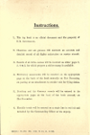

Sergeant David Ellis Williams
Royal Air Force | 1380623 | 97 Squadron | ED928 (OF-B)
Archives
This page contains links to documents and photos, several of which have been passed down by David's wife Bridget. Please see the Contact page for information about the use of this material.
Personal Archives
| Item Thumbnail | Item Description |
|---|---|
| A formal photograph of David in R.A.F. uniform. The date of the photograph is unknown. | |
| A letter from R.A.F. Bourn from the Wing Commander of No. 7 Squadron informing of the suspected death of David. The letter is dated the 23rd June, 1943. | |
| A letter from the War Casualty Branch instructed by the Air Council with updated news of the crash from official German information. The letter is dated 4th October, 1943. | |
| A letter from the Air Ministry informing of the location of the grave. The grave was visited by an investigating Officer who confirmed that a full militry burial was undertaken. The letter is dated 22nd October, 1943. | |
|  | This is an electronic version of the formal flight logbook that was kept. The logbook contains details of all training and subsequent missions that were undertaken, including the final flight. A poignant last entry has been completed by somebody else simply stating 'Death Presumed, 23.6.1943'. |
| A photograph of the grave headstone from the cemetery in Soestbergen, Utrecht. The photograph has been kindly supplied by Stevin Oudshoorn. |
External Archives
| Item Thumbnail | Item Description |
|---|---|
| A photograph of the glove that belonged to Edward Bellis. The photograph has been kindly supplied by Co Maarschalkerweerd. | |
| A photograph of some debris from the crash. This is supected to be from the hull. The photograph has been kindly supplied by Co Maarschalkerweerd. | |
| A photograph of some debris from the crash. The photograph has been kindly supplied by Co Maarschalkerweerd. | |
| A photograph of an unused parachute from the crash. The photograph has been kindly supplied by Co Maarschalkerweerd. | |
| A drawing of the Lancaster in flight over Utrecht. The drawing has been kindly supplied by Co Maarschalkerweerd. | |
|
A necklace that was made from the glass of the Lancaster. The photos have been kindly supplied by Mirjam van Gelder - Verhoef. I was contacted by Mirjam who told me of the story of how the cross came into being: It is about the crash of the Lancaster ED928 on the 23 th of June 1943 in Utrecht, neighbourhood called 'Wittevrouwen'. My mother lived there nearby during that time. When the crash occured, some of my friends got hold of a piece of the glass from the cockpit of the ED928. One of those friends made for every female friend of that group a cross (for a necklace) made of that glass. He did that out of respect of the lost lives of the crew. This is the story she once told me. She passed away 8 years ago. She gave that cross to me as a reminder. |
|